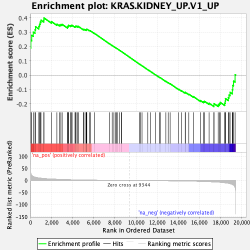
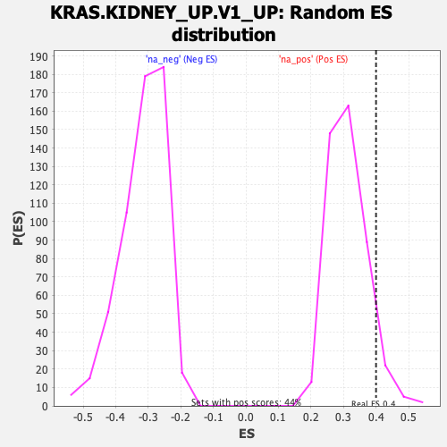

| | | Dataset | DE_genes |
| Phenotype | NoPhenotypeAvailable |
| Upregulated in class | na_pos |
| GeneSet | KRAS.KIDNEY_UP.V1_UP |
| Enrichment Score (ES) | 0.3999005 |
| Normalized Enrichment Score (NES) | 1.2828523 |
| Nominal p-value | 0.06561086 |
| FDR q-value | 0.21831122 |
| FWER p-Value | 0.997 |
Table: GSEA Results Summary

Fig 1: Enrichment plot: KRAS.KIDNEY_UP.V1_UP
Profile of the Running ES Score & Positions of GeneSet Members on the Rank Ordered List
| SYMBOL | RANK IN GENE LIST | RANK METRIC SCORE | RUNNING ES | CORE ENRICHMENT | | 1 | GPRC5B | 0 | 106.176 | 0.1910 | Yes |
| 2 | CCND2 | 34 | 30.097 | 0.2434 | Yes |
| 3 | ASPA | 114 | 21.815 | 0.2786 | Yes |
| 4 | TSPAN7 | 264 | 16.730 | 0.3010 | Yes |
| 5 | RTN1 | 429 | 13.814 | 0.3174 | Yes |
| 6 | CPE | 477 | 13.144 | 0.3386 | Yes |
| 7 | DNM3 | 792 | 10.664 | 0.3416 | Yes |
| 8 | CDK5R1 | 856 | 10.284 | 0.3568 | Yes |
| 9 | SORBS1 | 916 | 9.884 | 0.3715 | Yes |
| 10 | GPR37 | 993 | 9.532 | 0.3848 | Yes |
| 11 | EPB41L3 | 1264 | 8.248 | 0.3857 | Yes |
| 12 | ALDH1A1 | 1275 | 8.206 | 0.3999 | Yes |
| 13 | KIT | 1981 | 6.130 | 0.3745 | No |
| 14 | CHGB | 2500 | 5.072 | 0.3569 | No |
| 15 | ERC2 | 2768 | 4.571 | 0.3513 | No |
| 16 | SATB1 | 2877 | 4.406 | 0.3536 | No |
| 17 | CAB39L | 2996 | 4.213 | 0.3551 | No |
| 18 | DYNC1I1 | 3504 | 3.525 | 0.3353 | No |
| 19 | GPNMB | 3535 | 3.490 | 0.3400 | No |
| 20 | SNAP25 | 3588 | 3.420 | 0.3435 | No |
| 21 | SERPINI1 | 3599 | 3.400 | 0.3491 | No |
| 22 | TRIM2 | 3779 | 3.196 | 0.3456 | No |
| 23 | KIF5C | 3852 | 3.102 | 0.3474 | No |
| 24 | SELENOP | 3939 | 3.000 | 0.3484 | No |
| 25 | FGF9 | 4216 | 2.676 | 0.3389 | No |
| 26 | ESRRG | 4263 | 2.641 | 0.3413 | No |
| 27 | AK5 | 4313 | 2.582 | 0.3434 | No |
| 28 | MAP7 | 4455 | 2.429 | 0.3405 | No |
| 29 | TMOD1 | 4539 | 2.349 | 0.3404 | No |
| 30 | A2M | 5021 | 1.914 | 0.3190 | No |
| 31 | ANK2 | 5047 | 1.897 | 0.3212 | No |
| 32 | NSG2 | 5169 | 1.807 | 0.3182 | No |
| 33 | GATM | 5280 | 1.715 | 0.3156 | No |
| 34 | SLC1A3 | 5303 | 1.691 | 0.3175 | No |
| 35 | CA2 | 5315 | 1.682 | 0.3199 | No |
| 36 | ADCY1 | 5335 | 1.665 | 0.3219 | No |
| 37 | RAPGEF4 | 5578 | 1.484 | 0.3121 | No |
| 38 | NSG1 | 5666 | 1.426 | 0.3102 | No |
| 39 | NAP1L2 | 6066 | 1.189 | 0.2917 | No |
| 40 | SIGLEC15 | 7496 | 0.486 | 0.2187 | No |
| 41 | GPR19 | 7736 | 0.399 | 0.2071 | No |
| 42 | XK | 7900 | 0.347 | 0.1993 | No |
| 43 | NRN1 | 8064 | 0.299 | 0.1914 | No |
| 44 | CRYAB | 8131 | 0.281 | 0.1885 | No |
| 45 | SCN2A | 8211 | 0.255 | 0.1849 | No |
| 46 | TRIM9 | 8404 | 0.200 | 0.1753 | No |
| 47 | MAFB | 8618 | 0.152 | 0.1646 | No |
| 48 | FZD3 | 8635 | 0.150 | 0.1640 | No |
| 49 | NUDT11 | 10326 | -0.208 | 0.0771 | No |
| 50 | GAD1 | 10408 | -0.228 | 0.0733 | No |
| 51 | RNLS | 10562 | -0.264 | 0.0659 | No |
| 52 | PLCB1 | 11111 | -0.420 | 0.0383 | No |
| 53 | TUBB4A | 11344 | -0.489 | 0.0272 | No |
| 54 | PECAM1 | 11839 | -0.644 | 0.0029 | No |
| 55 | TRIL | 12206 | -0.765 | -0.0147 | No |
| 56 | HEY1 | 12284 | -0.799 | -0.0172 | No |
| 57 | GABRR2 | 12821 | -1.025 | -0.0431 | No |
| 58 | WSCD1 | 13040 | -1.116 | -0.0523 | No |
| 59 | RCAN2 | 13223 | -1.200 | -0.0595 | No |
| 60 | CFAP69 | 14025 | -1.687 | -0.0979 | No |
| 61 | HPCAL4 | 14294 | -1.877 | -0.1084 | No |
| 62 | GCGR | 14651 | -2.157 | -0.1229 | No |
| 63 | ANK3 | 14670 | -2.170 | -0.1199 | No |
| 64 | SOBP | 14995 | -2.447 | -0.1322 | No |
| 65 | DDX6 | 15427 | -2.865 | -0.1494 | No |
| 66 | METTL7A | 16093 | -3.665 | -0.1771 | No |
| 67 | SCN1B | 16377 | -4.037 | -0.1845 | No |
| 68 | ETV1 | 16480 | -4.205 | -0.1822 | No |
| 69 | MEF2C | 16914 | -4.910 | -0.1957 | No |
| 70 | CPEB3 | 17371 | -5.886 | -0.2087 | No |
| 71 | EMP1 | 17378 | -5.897 | -0.1984 | No |
| 72 | PNMA2 | 17774 | -6.877 | -0.2064 | No |
| 73 | FAM153B | 17878 | -7.213 | -0.1988 | No |
| 74 | TRIB2 | 17967 | -7.539 | -0.1898 | No |
| 75 | PLSCR4 | 18393 | -9.408 | -0.1948 | No |
| 76 | NMNAT2 | 18447 | -9.662 | -0.1802 | No |
| 77 | LIMCH1 | 18466 | -9.764 | -0.1635 | No |
| 78 | PELI2 | 18734 | -11.463 | -0.1567 | No |
| 79 | CRYM | 18801 | -12.066 | -0.1384 | No |
| 80 | SORL1 | 18902 | -13.127 | -0.1199 | No |
| 81 | NEBL | 19118 | -16.436 | -0.1015 | No |
| 82 | DUSP6 | 19158 | -17.467 | -0.0721 | No |
| 83 | CP | 19228 | -19.381 | -0.0408 | No |
| 84 | MPZL2 | 19376 | -28.670 | 0.0032 | No |
Table: GSEA details [plain text format]

Fig 2: KRAS.KIDNEY_UP.V1_UP: Random ES distribution
Gene set null distribution of ES for KRAS.KIDNEY_UP.V1_UP